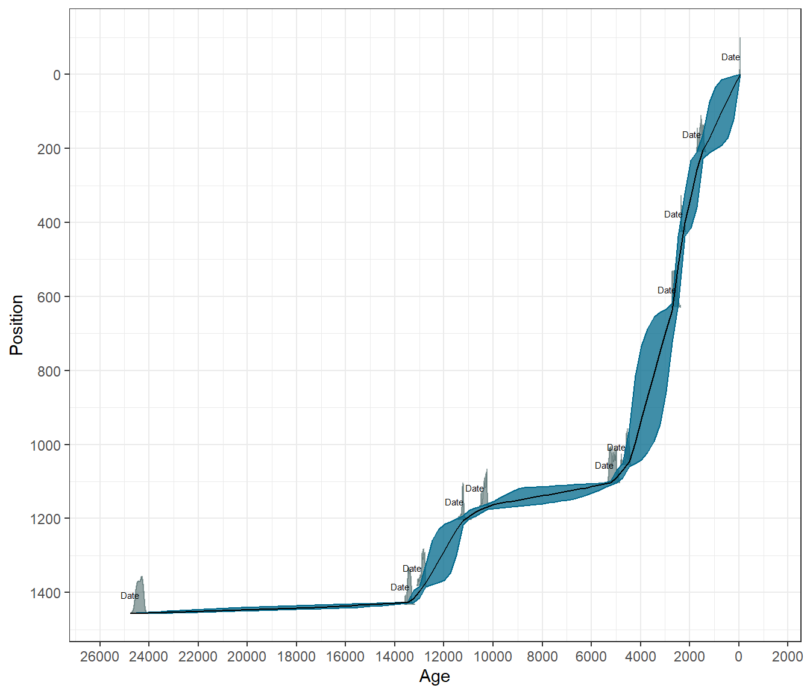
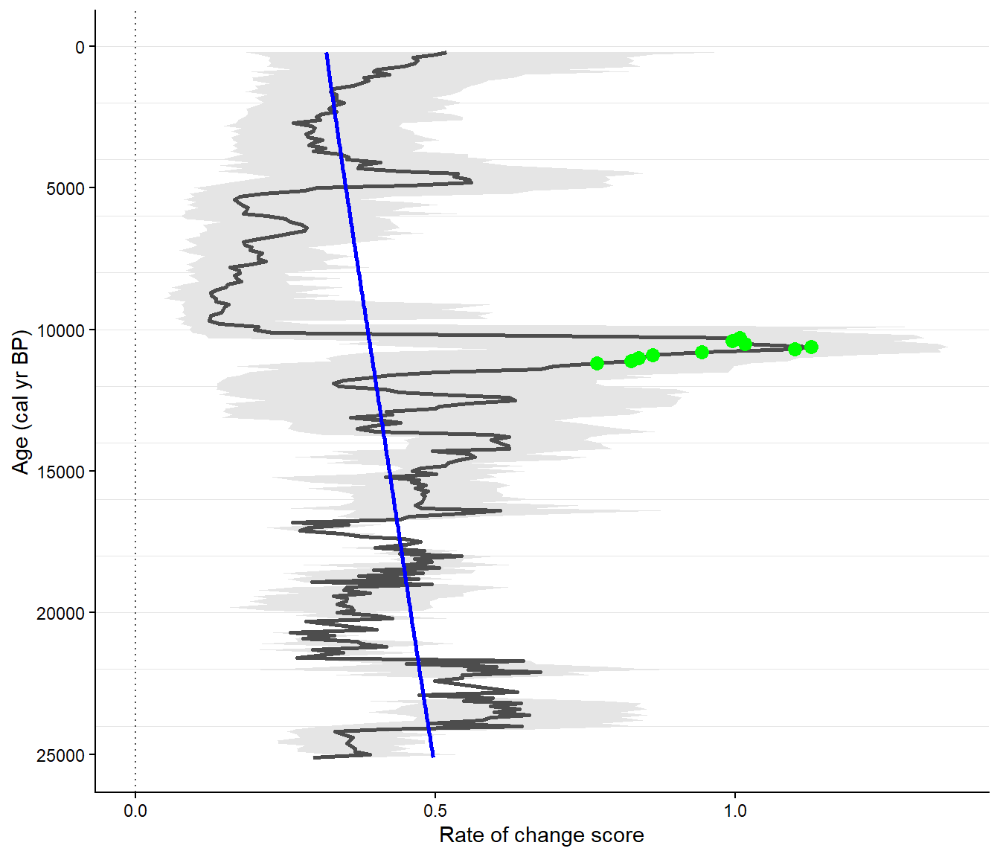

package_list <-
c(
"tidyverse", # general data wrangling and visualisation
"neotoma2", # access to the Neotoma database
"pander", # nice tables
"Bchron", # age-depth modelling
"janitor", # string cleaning
"remotes" # installing packages from GitHub
)This workflow should show the full strength of the RRatepol package and serve as step-by-step guidance starting from downloading dataset from Neotoma, building age-depth models, to estimating rate-of-change using age uncertainty.
⚠️This workflow is only meant as an example: There are several additional steps for data preparation, which should be done to properly implement RRatepol and assess the rate of change of a fossil pollen dataset from Neotoma!
For an even more detailed step-by-step workflow with fossil pollen data, please see other package materials, such as African Polled Database workshop.
Additionally, please see FOSSILPOL, an R-based modular workflow to process multiple fossil pollen records to create a comprehensive, standardized dataset compilation, ready for multi-record and multi-proxy analyses at various spatial and temporal scales.
Finally, for workflows using other data types (e.g., geochemistry and XRF), see Oeschger Centre for Climate Change Research Workshop.
Install packages
Make a list of packages needed from CRAN
Install all packages from CRAN
lapply(
package_list, utils::install.packages
)Attach packages
Download the dataset Glendalough Valley from Neotoma
gl_dataset_download <-
neotoma2::get_downloads(17334)Prepare the pollen counts
# get samples
gl_counts <-
neotoma2::samples(gl_dataset_download)
# select only "pollen" taxa
gl_taxon_list_selected <-
neotoma2::taxa(gl_dataset_download) %>%
dplyr::filter(element == "pollen") %>%
purrr::pluck("variablename")
# prepare taxa table
gl_counts_selected <-
gl_counts %>%
as.data.frame() %>%
dplyr::mutate(sample_id = as.character(sampleid)) %>%
tibble::as_tibble() %>%
dplyr::select("sample_id", "value", "variablename") %>%
# only include selected taxons
dplyr::filter(
variablename %in% gl_taxon_list_selected
) %>%
# turn into the wider format
tidyr::pivot_wider(
names_from = "variablename",
values_from = "value",
values_fill = 0
) %>%
# clean names
janitor::clean_names()
head(gl_counts_selected)[, 1:5]| sample_id | larix | cichorioideae | prunus_type | apiaceae |
|---|---|---|---|---|
| 161508 | 1 | 1 | 1 | 1 |
| 161509 | 0 | 1 | 0 | 0 |
| 161510 | 0 | 1 | 0 | 0 |
| 161511 | 0 | 1 | 0 | 0 |
| 161512 | 0 | 2 | 0 | 0 |
| 161513 | 0 | 0 | 0 | 1 |
Here, we strongly advocate that attention should be paid to the selection of the ecological groups as well as the harmonisation of the pollen taxa. However, that is not the subject of this workflow, but any analysis to be published needs careful preparation of the fossil pollen datasets before using R-Ratepol!
Preparation of the levels
Sample depth
Extract depth for each level
| sample_id | depth |
|---|---|
| 161508 | 0 |
| 161509 | 8 |
| 161510 | 16 |
| 161511 | 24 |
| 161512 | 32 |
| 161513 | 40 |
Age depth modelling
e will recalculate the age-depth model ‘de novo’ using the Bchron package.
Prepare chron.control table and run Bchron
The chronology control table contains all the dates (mostly radiocarbon) to create the age-depth model.
Here we only present a few of the important steps of preparation of the chronology control table. There are many more potential issues, but solving those is not the focus of this workflow.
# First, get the chronologies and check which we want to use used
gl_chron_control_table_download <-
neotoma2::chroncontrols(gl_dataset_download)
print(gl_chron_control_table_download)| siteid | chronologyid | depth | thickness | agelimityounger | agelimitolder |
|---|---|---|---|---|---|
| 11577 | 9691 | 0 | 0 | -45 | -45 |
| 11577 | 9691 | 210 | 3 | 1590 | 1710 |
| 11577 | 9691 | 426 | 4 | 2280 | 2340 |
| 11577 | 9691 | 630 | 4 | 2470 | 2530 |
| 11577 | 9691 | 1056 | 3 | 4030 | 4090 |
| 11577 | 9691 | 1105 | 4 | 4410 | 4510 |
| chroncontrolid | chroncontrolage | chroncontroltype |
|---|---|---|
| 37155 | -45 | Core top |
| 37156 | 1650 | Radiocarbon |
| 37157 | 2310 | Radiocarbon |
| 37158 | 2500 | Radiocarbon |
| 37159 | 4060 | Radiocarbon |
| 37160 | 4460 | Radiocarbon |
# prepare the table
gl_chron_control_table <-
gl_chron_control_table_download %>%
dplyr::filter(chronologyid == 9691) %>%
tibble::as_tibble() %>%
# Here we calculate the error as the average of the age `limitolder` and
# `agelimityounger`
dplyr::mutate(
error = round((agelimitolder - agelimityounger) / 2)
) %>%
# As Bchron cannot accept a error of 0, we need to replace the value with 1
dplyr::mutate(
error = replace(error, error == 0, 1),
error = ifelse(is.na(error), 1, error)
) %>%
# We need to specify which calibration curve should be used for what point
dplyr::mutate(
curve = ifelse(as.data.frame(gl_dataset_download)["lat"] > 0, "intcal20", "shcal20"),
curve = ifelse(chroncontroltype != "Radiocarbon", "normal", curve)
) %>%
tibble::column_to_rownames("chroncontrolid") %>%
dplyr::select(
chroncontrolage, error, depth, thickness, chroncontroltype, curve
)
head(gl_chron_control_table)| chroncontrolage | error | depth | thickness | chroncontroltype | |
|---|---|---|---|---|---|
| 37155 | -45 | 1 | 0 | 0 | Core top |
| 37156 | 1650 | 60 | 210 | 3 | Radiocarbon |
| 37157 | 2310 | 30 | 426 | 4 | Radiocarbon |
| 37158 | 2500 | 30 | 630 | 4 | Radiocarbon |
| 37159 | 4060 | 30 | 1056 | 3 | Radiocarbon |
| 37160 | 4460 | 50 | 1105 | 4 | Radiocarbon |
| curve | |
|---|---|
| 37155 | normal |
| 37156 | intcal20 |
| 37157 | intcal20 |
| 37158 | intcal20 |
| 37159 | intcal20 |
| 37160 | intcal20 |
As this is just a toy example, we will use only the iteration multiplier (i_multiplier) of 0.1 to reduce the computation time. However, we strongly recommend increasing it to 5 for any normal age-depth model construction.
i_multiplier <- 0.1 # increase to 5
# Those are default values suggested by the Bchron package
n_iteration_default <- 10e3
n_burn_default <- 2e3
n_thin_default <- 8
# Let's multiply them by our i_multiplier
n_iteration <- n_iteration_default * i_multiplier
n_burn <- n_burn_default * i_multiplier
n_thin <- max(c(1, n_thin_default * i_multiplier))
gl_bchron <-
Bchron::Bchronology(
ages = gl_chron_control_table$chroncontrolage,
ageSds = gl_chron_control_table$error,
positions = gl_chron_control_table$depth,
calCurves = gl_chron_control_table$curve,
positionThicknesses = gl_chron_control_table$thickness,
iterations = n_iteration,
burn = n_burn,
thin = n_thin
)Visually check the age-depth models
plot(gl_bchron)
Predict ages
Let’s first extract posterior ages from the age-depth model (i.e. possible ages)
age_position <-
Bchron:::predict.BchronologyRun(object = gl_bchron, newPositions = gl_level$depth)
age_uncertainties <-
age_position %>%
as.data.frame() %>%
dplyr::mutate_all(., as.integer) %>%
as.matrix()
colnames(age_uncertainties) <- gl_level$sample_id
gl_level_predicted <-
gl_level %>%
dplyr::mutate(
age = apply(
age_uncertainties, 2,
stats::quantile,
probs = 0.5
)
)
head(gl_level_predicted)| sample_id | depth | age |
|---|---|---|
| 161508 | 0 | -45 |
| 161509 | 8 | 16 |
| 161510 | 16 | 76 |
| 161511 | 24 | 137 |
| 161512 | 32 | 197 |
| 161513 | 40 | 258 |
Estimation Rate-of-Change
Here we use the the prepared data to estimate the rate of vegetation change. We will be using the Chi-squared coefficient as the dissimilarity coefficient (works best for pollen data, dissimilarity_coefficient = "chisq"), and time_standardisation == 500 (this means that all ROC values are ‘change per 500 yr’). We will add smoothing of the pollen data using smooth_method = "shep" (i.e. Shepard’s 5-term filter). Finally, we will use the method of the “binning with the mowing window” (working_units = "MW"). This is again a toy example for a quick computation and we would recommend increasing the set_randomisations to 10.000 for any real estimation.
set_randomisations <- 100 # increase to 10e3
gl_roc <-
RRatepol::estimate_roc(
data_source_community = gl_counts_selected,
data_source_age = gl_level_predicted,
age_uncertainty = age_uncertainties, # Add the uncertainty matrix
smooth_method = "shep", # Shepard's 5-term filter
dissimilarity_coefficient = "chisq",
working_units = "MW", # set to "MW" to apply the "moving window"
bin_size = 500, # size of a time bin
number_of_shifts = 5,
standardise = TRUE, # set the taxa standardisation
n_individuals = 150, # set the number of pollen grains
rand = set_randomisations, # set number of randomisations
use_parallel = FALSE # use_parallel = TRUE to use parallel calculation
)Detect peak-points and plot the results
We will detect a significant increase in RoC values (i.e. peak-points). Specifically, we will use the “Non-linear” method, which will detect significant change from a non-linear trend of RoC
gl_roc_peaks <-
RRatepol::detect_peak_points(
data_source = gl_roc,
sel_method = "trend_non_linear"
)Plot the estimates showing the peak-points
RRatepol::plot_roc(
data_source = gl_roc_peaks,
peaks = TRUE,
trend = "trend_non_linear"
)
#> Warning: Using `size` aesthetic for lines was deprecated in ggplot2 3.4.0.
#> ℹ Please use `linewidth` instead.
#> ℹ The deprecated feature was likely used in the RRatepol package.
#> Please report the issue to the authors.